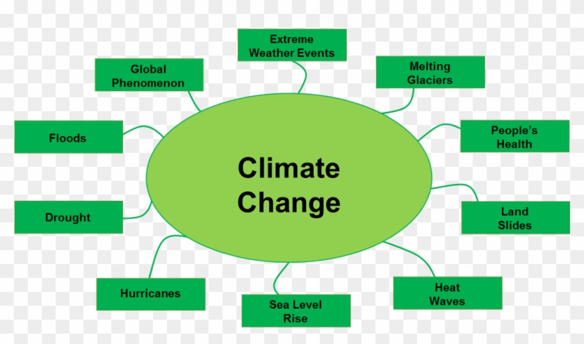

What is climate change?
Although we are very familiar with this term, it can be difficult to find the words to explain it correctly if someone asks to us what is it. Thankfully different institutions and organizations can help us to find a good definition, like for example the United Nations:
Climate change refers to long-term shifts in temperatures and weather patterns. These shifts may be natural, such as through variations in the solar cycle. But since the 1800s, human activities have been the main driver of climate change, primarily due to burning fossil fuels like coal, oil and gas.
This means that climate change is something natural that has happened to the Earth before, but nowadays it is happening before expected and mainly because of human's fault
Now on you can find useful links to pages about climate change and other topics related to it
Don't forget to explore all the other pages in our web!